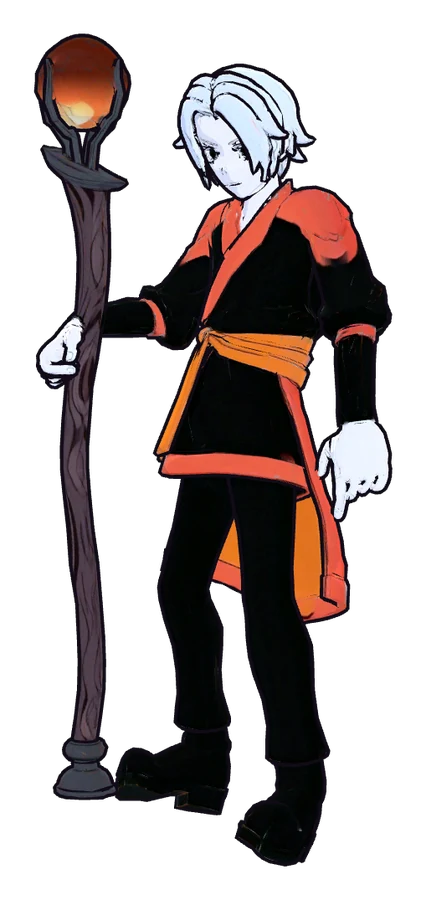
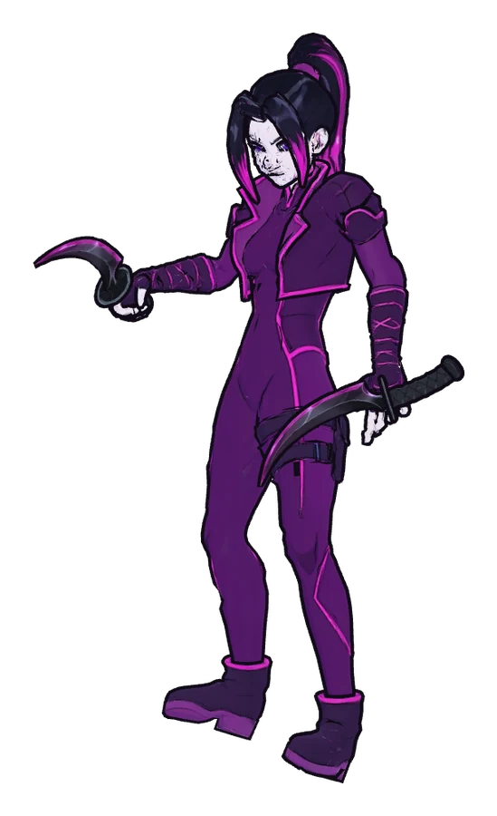

Devlog #4: First heroes in full art
The gray capsules are starting to go. Two heroes now have real models, animations and ability effects in the anime style the game is aiming for.


Orin Ash
Orin is a fire mage with a staff topped by a burning orb. His basic attacks now fly from the tip of the staff, and each of his abilities has its own effect: the fireball, the wall of flame, the close-range scorch and the meteor falling from the sky. Enemies he burns visibly smoulder.
Kira Vex
Kira is a shadow assassin with two crescent daggers that glow magenta. Her shadow bind, her smoke cloud, her crescent slash and her execute all have effects now, and slowed or blinded enemies show it. Like everyone else in the game, she never lunges or dashes. She has to walk in close.
Attacks that land when they look like they land
Basic attacks are now timed to the animation. A melee swing deals its damage when the blade connects, and a ranged bolt leaves the weapon at the right moment and hits as it arrives. It's a small change, but fights read much better.
A path for every hero
The art is built so that each new hero drops in as a model plus a set of effects. Any hero without art yet still shows as a capsule, so the game stays playable while the rest of the roster gets made.
Next
More heroes in full art, and a closer look at the relic arenas in action.
Proof of date
git commit 7e633620b1e83f37fba264ee07676b7c5b0dec86